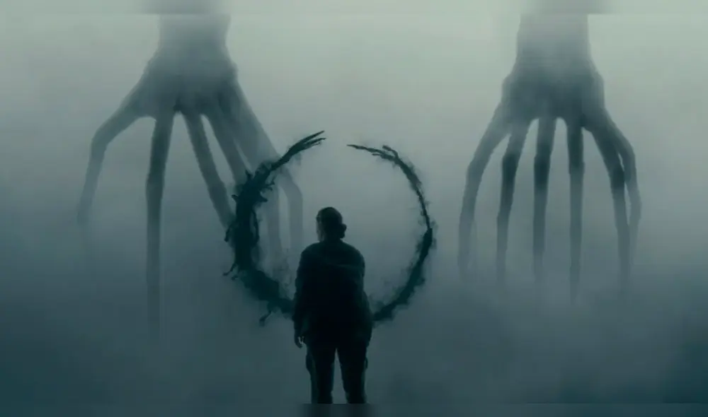

A diferencia de otras cintas de género, Arrival redefine la ciencia ficción al centrarse en la comunicación en lugar del conflicto. A través de la lingüista Louise Banks, la película explora cómo el lenguaje determina nuestra percepción del tiempo.
